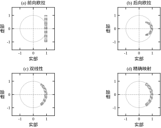
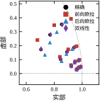
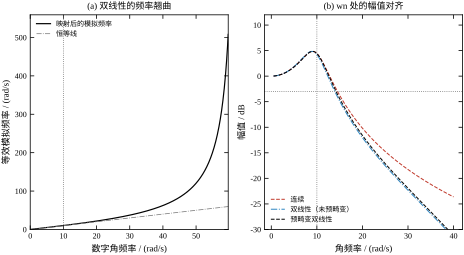
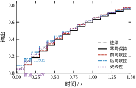
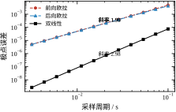

第 5 章末尾留下一句话：零阶保持只是众多离散化方法中的一种。这句话的分量比它看上去重，因为它意味着一个连续传递函数进入离散域之后，并没有唯一正确的答案。
取一阶惯性环节 G(s)=1/(s+1)，采样周期 T_s=0.1 s。五种常见做法给出的离散极点分别是：零阶保持 0.904837、前向欧拉 0.900000、后向欧拉 0.909091、双线性 0.904762、预修正双线性（截止频率取 1 rad/s）0.904686。五个数都落在 0.9 附近，差别在第三位小数，粗看可以忽略。但把偏差的方向列出来，性质就完全不同了：前向欧拉偏内，衰减比真实系统快；后向欧拉偏外，衰减比真实系统慢；双线性略偏内，偏差只有前两者的六十分之一；零阶保持与精确解完全重合，因为一阶对象没有零点，零阶保持在采样点上就是精确解。
同一件事还体现在差分方程上。五种方法给出的实现是：
零阶保持 y[k] = 0.904837 y[k-1] + 0.095163 u[k-1]
前向欧拉 y[k] = 0.900000 y[k-1] + 0.100000 u[k-1]
后向欧拉 y[k] = 0.909091 y[k-1] + 0.090909 u[k]
双线性 y[k] = 0.904762 y[k-1] + 0.047619 (u[k] + u[k-1])
预修正双线性 y[k] = 0.904686 y[k-1] + 0.047657 (u[k] + u[k-1])五行代码都能跑，在没有对照的情况下谁也不会觉得哪一行有问题。可它们的阶跃响应在 t=1 s 处的值是 0.632121、0.651322、0.649506、0.649931、0.650237，连续解是 0.632121。前向欧拉高估了 3.0\%，后向欧拉高估了 2.7\%，双线性高估了 2.8\%，预修正高估了 2.9\%。这些偏差不是随机误差，也不是算错了，而是每种映射固有的、可以用公式预测的偏移。所谓“离散化”，本质上是把 s 平面到 z 平面的一次映射选择，映射选得不同，模型就不同，动态就不同。
更麻烦的是，这五行代码里有两类因果关系。前向欧拉和零阶保持的输出只依赖 u[k-1]，后向欧拉、双线性与预修正却依赖当前的 u[k]。在控制器里这意味着后者要求“本拍输入先到、本拍输出后算”，在实时调度上多一层约束；在仿真里意味着前者可以显式递推，后者每一步都要解一次方程。这些差别都不是数学细节，而是会写进代码、会决定程序结构的工程事实。
本章围绕三个问题展开。
第一，怎么算？ 给定连续的 G(s)，要用一个统一的、可以手算也可以编程的流程得到 G(z)。工程上流传的做法有三种：直接代换（把 s 换成某个 z 的有理式）、零极点匹配（把极点和零点逐个搬过去）、以及零阶保持（先算连续对象加保持器的脉冲响应再取 Z 变换）。三者的结果不一样，适用场合也不一样，本章要把它们放在同一张表里比较，而不是各讲一套。
第二，保住了什么？ 一个映射好不好，要看你关心哪条性质。稳定性是第一位的：连续域稳定的系统，离散化之后必须还稳定。频率特性是第二位的：在关心的频段内，幅频和相频要尽量贴近连续解。阶跃响应、直流增益、零点的位置，各自又有不同的保持情况。没有任何一种映射能同时保住全部性质，本章的任务之一就是把“哪种映射保住哪条性质”讲清楚，让读者能按需求选，而不是按习惯选。
第三，代价是什么？ 双线性的精度是二阶的，前向和后向是一阶的，这个“阶”到底怎么量？双线性在低频段几乎完美，为什么在高频段会把频率“压缩”，压缩多少可以算出来吗？预修正双线性只在某一个频率点上精确，离开这个点误差又回到多少？这些问题都有闭式答案，本章会逐条给出，并用数值验证。
先看四个现象。它们都能用本章的工具解释，也都常被误判。
现象一：离散化会把稳定系统算成不稳定。 基线对象 G(s)=8/(s^3+2.1s^2+6.2s+8) 的三个极点都在左半平面，连续域稳定。取 T_s=0.2 s 用前向欧拉离散，得到的极点最大模是 1.949359，已经跑到单位圆外。用它做阶跃仿真，第 50 拍输出的绝对值达到 1.419\times10^{14}。程序没有报错，系数也都是有限数，只是结果发散。原因在极点的映射式：前向欧拉把 s_i 映成 1+s_iT_s，这是一个以 1 为圆心、半径 |s_iT_s| 的圆上的点，采样周期一大就越界。“稳定对象离散化后一定稳定”是错的，前向欧拉是反例，而且是最常用的反例。
现象二：双线性把相对阶改成了零。 一阶对象 1/(s+1) 在连续域是严格真有理的：分子是常数、分母是一阶，高频幅值按 -20 dB/dec 衰减，输出不会瞬间跟随输入。双线性离散后，分子是 0.047619(z+1)、分母是 z-0.904762，两者同为一次，相对阶从 1 变成 0，差分方程里出现了 u[k] 项（就是 §6.1.1 的第四行）。也就是说，离散模型认为这一拍的输入会立刻影响这一拍的输出，而连续对象并不具备这个性质。原因在映射式本身：双线性把 s=\infty 映到 z=-1，连续域无穷远处的零点被搬成了 z=-1 处的显式零点。零点账面的变化不是记号问题：它决定差分方程能不能显式递推，决定控制器里会不会出现代数环，也决定高频段幅值在奈奎斯特频率处是否真的降到零。
现象三：预畸变只在一个点上精确。 双线性把连续频率 \omega_a 压成数字频率 \omega，两者满足 \omega_a=\frac{2}{T_s}\tan(\frac{\omega T_s}{2})。预修正双线性在某个指定频率 \omega_c 处把这个压缩比校正回来，实测该点的幅值误差是 2.220\times10^{-16}，已经是机器精度。但换成另一个频点——比如 -3 dB 点——偏差立刻回到 -2.20\%。预畸变不是“更准的双线性”，而是“在指定点上准的双线性”，这个区别决定了它只能用在对某个特征频率有硬要求的场合，比如数字滤波器设计，不能当成通用改进。
现象四：采样点上的值可以一个不差，采样点之间却在振荡。 零阶保持在采样点上与连续解逐点相等，这一点在 §6.3.4 已经用数字对过（0.632121 对 0.632121）。但“逐点相等”不等于“处处相等”。基线对象的主导极点是 -0.295\pm\mathrm{j}2.288，振荡周期 2\pi/2.288=2.746 s。若采样周期恰好取 2.746 s，每个采样点都落在振荡的同一相位上，离散模型的那对共轭极点退化成实数 \mathrm{e}^{-0.295\times2.746}=0.4448，采样序列看起来是一条单调衰减的曲线，没有任何振荡痕迹。而真实输出在这 2.746 s 之内已经走完了一个完整的来回。
这不是软件的 bug，而是“离散模型只承诺采样点”这条前提的直接后果，它和第 4 章的混叠是同一件事：2.288 rad/s 的振荡在 T_s=2.746 s 的采样下折叠到 0 rad/s，也就是直流。连续域里明显的欠阻尼，可以在离散数据里表现为过阻尼，而且阶跃响应的每一个采样值都对得上。
工程含义有三条。第一，T_s 不能取成被控对象振荡周期的整数分之一，否则这个振型会在数据里消失；从这条约束出发，“T_s 小于振荡周期的十分之一”比“带宽的十倍”更严格，也更好算——它只需要知道极点虚部。第二，仿真验证不能只看采样点，要按更细的时间网格重算连续解，再与离散解比对，本章图 6-4 就是按这个方式画的。第三，现场遇到“采集数据看着很稳、执行机构却在抖”，先算一下采样周期与振型的比值，再去怀疑控制器参数。
§6.2 建立定义：四种代换映射的表达式、零极点匹配的规则、零阶保持在映射框架里的位置，并给出一个统一的“替换法”实现——四种映射只差一对多项式。§6.3 推导性质：极点映射公式、阶次与零点的搬运规则、增益匹配、收敛阶、频率翘曲的闭式表达。§6.4 落到实现：把 G(z) 写成差分方程，说明直接型结构与因果性约束，给出预畸变的计算流程和数值上的注意事项。§6.5 给出边界：采样率怎么选、哪些性质能保、哪些必须放弃，以及与相邻章的分工。§6.6 做验证：五组图、九段检查、五个注入错误。§6.7 收束全章。
与相邻章的分工需要说明。零阶保持的传递函数、脉冲传函的定义、z=\mathrm{e}^{sT_s} 的几何映射已在第 5 章建立，本章直接引用式 (5-1) 与式 (5-9)，不再重复推导。采样定理与混叠在第 4 章；离散系统的代数稳定判据（Jury 判据、双线性变换后的 Routh 判据）在第 38 章，本章只用“极点模小于 1”这一条几何判据；离散状态空间的数值计算在第 7 章；数字 PID 里“连续 PID 怎么变成增量式”的具体做法在第 44 章，工程整定在第 106 章；预测控制的离散化在第 58 章，工程实现在第 80 章；纯滞后环节的离散近似与 Smith 预估器在第 47 章，变采样与事件触发的情形在第 75 章；定点运算、系数量化与溢出在第 84–86 章。
一句话概括本章的定位：第 5 章回答“离散系统怎么算”，本章回答“离散模型从哪里来、选哪一种、代价是多少”。
中文文献里这三个词经常混用，但它们指三件不同的事，混用会直接导致对误差来源的误判。
离散化只在时间轴上动手：把连续时间 t 换成采样序号 k，幅值仍是实数。本章讨论的全部内容都属于这一层——G(s) 变 G(z)、微分方程变差分方程，幅值不取整。
量化只在幅值上动手：把实数换成有限个字长的定点数或浮点数。它发生在三个方面——系数被存成有限字长、中间运算结果被截断、输入输出经 ADC/DAC 转换。量化误差与 T_s 无关，与字长有关。
数字化是两者的合并，再加上编码与调度。一个完整的数字控制回路里，三层误差是串起来的：采样引入混叠（第 4 章）、映射引入翘曲与零点偏移（本章）、量化引入舍入与极限环（第 84–86 章）。三层误差量级不同，处理手段也不同，混在一起谈就说不清“到底是哪一步出了问题”。
还有第四个词容易混进来：实现。它指的是拿到 G(z) 之后用直接型、级联型还是状态空间去算。实现方式不影响传递函数，但影响数值精度，属于第 7 章的内容。
本章严格限定在第一层。所以文中说“双线性的误差是 2.8\%”时，指的是映射本身带来的偏差，不含量化、不含采样混叠，也不含实现误差。这个界定看起来学究，实际很要紧：现场一个回路表现不对，先要判断问题出在哪一层，否则会把量化引起的极限环当成“离散化方法选错了”，改来改去也修不好。
所谓离散化，在数学上就是选一个有理解析函数 R(z)，把连续传递函数里的 s 全部换成它：
s=R(z). \tag{6-1}
这个函数不能随便选，它至少要满足两个条件：当 z\to1 时 R(z)\to0，因为 z=1 对应直流，而连续域的直流是 s=0；当 z\to-1 时 R(z)\to\infty，因为 z=-1 对应奈奎斯特频率，连续域在那里是无穷远。满足这两条的 R(z) 有无穷多个，工程上常用的只有四个，它们的来历各不相同。
前向欧拉来自一阶前向差分。用 (x[k+1]-x[k])/T_s 近似 \mathrm{d}x/\mathrm{d}t，而 x[k+1]=zx[k]，于是
s=\frac{z-1}{T_s}. \tag{6-2}
后向欧拉来自一阶后向差分，用 (x[k]-x[k-1])/T_s 近似导数，x[k-1]=z^{-1}x[k]，于是
s=\frac{z-1}{T_s z}. \tag{6-3}
双线性变换（Tustin）来自梯形积分。把 \mathrm{d}x/\mathrm{d}t=f 在 [kT_s,(k+1)T_s] 上积分，用两端值的平均近似 f，得到 (x[k+1]-x[k])/T_s=\frac{1}{2}(f[k+1]+f[k])，整理后同样是 s 的一次分式：
s=\frac{2}{T_s}\frac{z-1}{z+1}. \tag{6-4}
双线性还有另一个来历，对理解它的性质更有用：它是指数函数的一阶 Padé 近似。把 z=\mathrm{e}^{sT_s} 中的指数在 sT_s=0 处展开并取 [1/1] 阶 Padé 逼近，得到 z\approx(1+sT_s/2)/(1-sT_s/2)，反解 s 就回到式 (6-4)。一阶 Padé 逼近在原点处与指数函数连同一阶导数都重合，这就是双线性精度比前向、后向高一阶的根源。
预修正双线性在双线性前面乘一个系数：
s=k\frac{z-1}{z+1},\qquad k=\frac{\omega_c}{\tan(\omega_cT_s/2)}. \tag{6-5}
系数 k 的取法使得连续频率 \omega_c 与数字频率 \omega_c 精确对应，代价是偏离 \omega_c 之后误差重新出现。k 的推导放在 §6.3.3。
四种映射都是 s 的一次分式，都可以写成 s=p(z)/q(z)，区别只在分子分母两个多项式。这个共同结构是 §6.2.5 统一实现的依据。
图 6-1 把四个映射画在同一张网格上。取 s 平面的等实部线与等虚部线，用 z=R^{-1}(s) 搬到 z 平面。前向欧拉的像仍是矩形网格，只是整体右移了 1；后向欧拉的像是圆族，圆心在实轴上；双线性的像是另一族圆，全部与单位圆正交；精确映射 z=\mathrm{e}^{sT_s} 的像是同心圆与射线。四张子图的差别，就是“同一个网格经过不同映射之后的形变”。
值得留意的是 (a) 与 (d) 的对比：前向欧拉的网格没有弯曲，坐标轴方向不变，判断极点的稳定性变得简单，但代价是单位圆的原像不再是左半平面，而是一个圆心在 -1/T_s 的圆盘，左半平面里落在圆盘之外的部分被丢掉了。(d) 的网格是弯的，左半平面严格地卷成单位圆盘，一条边都不多、一条边都不少。

传递函数的动态由极点决定，所以先看极点怎么走。把 s=s_i 代入式 (6-2)–(6-5) 并解出 z，得到四条极点映射式。前向欧拉是
z_i=1+s_iT_s, \tag{6-6}
后向欧拉是
z_i=\frac{1}{1-s_iT_s}, \tag{6-7}
双线性是
z_i=\frac{2+s_iT_s}{2-s_iT_s}, \tag{6-8}
精确映射是
z_i=\mathrm{e}^{s_iT_s}. \tag{6-9}
前三条是 s 的一次分式或线性式，第四条是超越函数。式 (6-9) 就是第 5 章的式 (5-1)，它是“标准答案”，其余三条都是它的有理逼近。
拿一阶对象 1/(s+1)、T_s=0.1 s 代入，s_1=-1：精确值 \mathrm{e}^{-0.1}=0.904837，前向 1-0.1=0.900000，后向 1/(1+0.1)=0.909091，双线性 (2-0.1)/(2+0.1)=0.904762。四个数排在一起，前向偏低 4.837\times10^{-3}，后向偏高 4.253\times10^{-3}，双线性偏低 7.551\times10^{-5}。偏差的方向和大小都可以从式 (6-6)–(6-8) 直接读出，不需要仿真。
对二阶对象，极点是共轭对，情况更能说明问题。取 \omega_n=2、\zeta=0.5、T_s=0.1 s，连续极点 -1\pm\mathrm{j}1.732051，模 2、相角 120^\circ。四种映射给出：
表 6-1 二阶对象在四种映射下的极点位置（\omega_n=2、\zeta=0.5、T_s=0.1 s）
| 方法 | 离散极点 | 模 | 相角 |
|---|---|---|---|
| 精确 | 0.891299\pm\mathrm{j}0.155940 | 0.904837 | 9.924^\circ |
| 前向欧拉 | 0.900000\pm\mathrm{j}0.173205 | 0.916515 | 10.893^\circ |
| 后向欧拉 | 0.887097\pm\mathrm{j}0.139682 | 0.898027 | 8.948^\circ |
| 双线性 | 0.891892\pm\mathrm{j}0.156041 | 0.905439 | 9.924^\circ |
这张表里最值得注意的是相角一列。双线性的模偏了 6.0\times10^{-4}，相角却与精确值完全一致，都是 9.924^\circ。原因是：双线性把 s 平面的虚轴精确映成单位圆，纯虚部（也就是振荡频率）的映射是保角的；而前向欧拉把虚轴映成一条过 1 的竖直线，相角必然偏大；后向欧拉把虚轴映成一个圆，相角偏小。相角对应阻尼与振荡，模对应衰减速度，两者的偏差是分开的，双线性只在一处占优，却恰好是工程上更要紧的那一处。
极点映射式直接给出稳定性的传递规律。连续域稳定要求 \mathrm{Re}(s_i)<0，离散域稳定要求 |z_i|<1。把两个条件拼起来，就得到每种映射“允许的连续极点区域”：
前向欧拉要求 |1+s_iT_s|<1，这是 s 平面上以 -1/T_s 为圆心、半径 1/T_s 的圆盘。左半平面里在这个圆盘之外的部分，映射之后会落到单位圆外。T_s 越大，圆盘越小，能保住的区域越窄。这就是 §6.1.3 现象一的几何解释：T_s=0.2 s 时，基线对象有一个极点距虚轴太近，落在了圆盘之外。
后向欧拉要求 |1-s_iT_s|>1，这是同一个圆的外部。左半平面整体落在这个外部里，所以后向欧拉无条件稳定：连续域稳定的对象，无论 T_s 取多大，离散后一定稳定。代价是精度只有一阶，而且偏差方向不固定：对一阶对象的实极点 -1，后向给出 0.909091，比精确值 0.904837 偏大，衰减偏慢；对表 6-1 的复极点，后向给出 0.898027，反而比精确值偏小，衰减偏快。这种“时大时小”正是低阶方法的特征。
双线性要求 |2+s_iT_s|<|2-s_iT_s|。对 s=\sigma+\mathrm{j}\omega 展开，两边平方后虚部抵消，剩下 4\sigma T_s<0，即 \sigma<0。左半平面与单位圆盘一一对应，无条件保稳定，而且映射是双射，单位圆上的每一点都对应虚轴上唯一一点。
精确映射 z=\mathrm{e}^{sT_s} 自然是保稳定的，它是参照系。
图 6-2 把这件事画成了图：取 \omega_n\in\{1,2,4,8\}、\zeta\in\{0.2,0.5,0.8\} 的十二个连续极点，T_s=0.05 s，用四种映射搬到 z 平面。四组点全部落在第一象限靠近单位圆的一条窄带里，但分布规律不同。以最靠外的 \omega_n=8、\zeta=0.2 为例：精确点是 0.923116\angle22.455^\circ，前向欧拉给出 1.000000\angle23.074^\circ，正好压在单位圆上；后向欧拉给出 0.870388\angle19.945^\circ，明显偏内；双线性给出 0.925820\angle22.208^\circ，半径与相角都只差千分之几。采样周期只有 0.05 s，前向欧拉就已经把一个 \zeta=0.2 的欠阻尼极点推到稳定边界上，这个现象在图上比在任何公式里都直观。

前四种方法是“代换”，零极点匹配是“搬运”。规则只有三条。
第一，极点逐个别搬：z_i=\mathrm{e}^{s_iT_s}，用的就是精确映射式 (6-9)。
第二，零点也逐个搬，但有限零点搬完之后，还要补零点。若连续对象有 n 个极点、m 个零点（n>m），则相对阶为 n-m，连续域在 s=\infty 处有 n-m 个零点。离散域没有“无穷远”，这些零点必须有落脚处，规则是把它们全部放在 z=-1。但只补 n-m-1 个，留一个不补，使离散模型的相对阶保持为 1，保证严格真有理、输出不瞬变。
第三，增益对齐。补完零点后传函还差一个常数因子，用直流增益定：令 z=1（对应 s=0）处两者相等。
三条规则合起来是：
H(z)=K\frac{\prod_{i=1}^{m}(z-\mathrm{e}^{s_iT_s})}{\prod_{j=1}^{n}(z-\mathrm{e}^{p_jT_s})}(z+1)^{\,n-m-1},\qquad K=\frac{G(0)}{H_0(1)}, \tag{6-10}
其中 H_0(z) 是取 K=1 时的式子。若连续对象在 s=0 处有零点（含积分环节或微分环节），直流增益为零或无穷，第三条要改成在某个有限频率点上对齐。
补零点这一步最容易被漏掉，后果也最直接。基线对象 n=3、m=0，应补 2 个 -1 零点；漏补之后，奈奎斯特频率处的幅值从 3.961\times10^{-18} 变成 6.469\times10^{-2}，凭空多出相当于直流增益 6.5\% 的高频增益。这个数字会在 §6.6 的变异测试里再出现一次。
四种代换映射只差一对多项式。写成
s=\frac{p(z)}{q(z)},\qquad p(z)=p_1z+p_0,\quad q(z)=q_1z+q_0, \tag{6-11}
四种映射的 (p,q) 是：前向欧拉 ([1,-1],[T_s])，后向欧拉 ([1,-1],[T_s,0])，双线性 ([2,-2],[T_s,T_s])，预修正双线性 ([k,-k],[1,1])。代入 G(s)=N(s)/D(s) 时，若 D 是 n 阶、N 是 m 阶，逐项替换得到
G(z)=\frac{\sum_{i=0}^{m}b_i\,p^{m-i}q^{\,n-m+i}}{\sum_{i=0}^{n}a_i\,p^{n-i}q^{\,i}}, \tag{6-12}
分子分母同乘了 q^n，所以两者都是 z 的 n 次多项式，不需要再做有理化。这就是“替换法”能直接给出差分方程系数的原因：一次多项式乘法，一次加法，系数就出来了。
表 6-2 列出六种方法对 1/(s+1) 的系数。六者的直流增益都是 1.000000，说明增益对齐这一步没有出错。
表 6-2 六种方法对 1/(s+1)、T_s=0.1 s 的离散系数
| 方法 | 分子 | 分母 | 差分方程 |
|---|---|---|---|
| 零阶保持 | 0.095163 | 1,\ -0.904837 | y[k]=0.904837y[k-1]+0.095163u[k-1] |
| 前向欧拉 | 0.1 | 1,\ -0.9 | y[k]=0.9y[k-1]+0.1u[k-1] |
| 后向欧拉 | 0.090909,\ 0 | 1,\ -0.909091 | y[k]=0.909091y[k-1]+0.090909u[k] |
| 双线性 | 0.047619,\ 0.047619 | 1,\ -0.904762 | y[k]=0.904762y[k-1]+0.047619(u[k]+u[k-1]) |
| 预修正双线性 | 0.047657,\ 0.047657 | 1,\ -0.904686 | 同双线性，系数微调 |
| 零极点匹配 | 0.095163 | 1,\ -0.904837 | 与零阶保持相同 |
零阶保持不是代换，它没法写成 s=R(z) 的形式。它的定义是第 5 章的式 (5-9)：
G(z)=(1-z^{-1})\,\mathcal{Z}\left\{\frac{G(s)}{s}\right\}. \tag{6-13}
前面那个 (1-z^{-1}) 是零阶保持器的传递函数，它补偿了“采样值在一个周期内保持不变”这件事。也正因为有它，零阶保持的阶跃响应在采样点上与连续解完全重合——对一阶对象，表 6-2 里零阶保持与零极点匹配给出完全相同的系数，原因是一阶对象没有有限零点，两条路径碰巧走到了一起；对二阶以上的对象，两者立刻分开。
三类方法的区别可以这样记：零阶保持保“阶跃响应的形状”，双线性保“稳定性与频率轴的对应”，零极点匹配保“零极点的位置”。 三者各自牺牲的东西不同，选哪一种取决于你要保住什么。零阶保持的零点位置由 T_s 决定（基线对象是 -3.5319 与 -0.2549，其中一个在单位圆外），双线性把全部 n-m 个零点堆在 -1，零极点匹配只堆 n-m-1 个。零点账目的差别会在 §6.5 变成“能不能做逆模型”的工程判断。
零阶保持虽然写不成 s=R(z)，它的极点映射却有闭式表达：z_i=\mathrm{e}^{s_iT_s}，等价地 s_i=\frac{1}{T_s}\ln z_i。这个式子里有对数，R(z) 不是有理函数，代入 G(s) 之后得到的也不是 z 的有理分式，§6.2.5 那套“通分后同乘 q^n”根本用不上——这正是它必须绕道部分分式展开（式 (6-13) 里的 \mathcal{Z} 运算）的原因。换句话说，替换法能覆盖四种映射，靠的是它们都把 s 写成了一次分式；这个便利的代价是极点映射只能做到近似。 零阶保持选了另一条路：极点映射精确，但系数计算要多一道展开，而且零点由采样过程生成、不受控。
两条路在稳定性上是一致的：对数映射把左半平面精确映到单位圆内，所以零阶保持无条件保稳定；双线性也把左半平面双射到单位圆内，同样无条件保稳定。保稳定的结论相同，来路不同——一个是精确的指数映射，一个是近似的分式映射，这也是为什么两者的极点位置略有差别（基线对象上 0.970809 对 0.971178），而稳定性结论完全一致。
除了上面六种，文献里还会遇到两个名字：脉冲响应不变法、一阶保持。它们不常用，但知道它们为什么被淘汰，有助于理解本章方法的取舍。
脉冲响应不变法的做法最直接：把连续冲激响应采样成序列，再取 Z 变换，即 G(z)=T_s\sum_k g(kT_s)z^{-k}。它的优点是冲激响应在采样点上精确，缺点是把第 4 章的混叠原封不动地搬了进来：连续频谱的所有周期延拓副本叠加在一起，高频段完全失真。更麻烦的是它不保增益——高频增益被折叠回低频，直流增益一般不等于原值，要手工再乘一个系数。数字滤波器设计里偶尔用它（因为它保留模拟滤波器的冲激响应形状），控制系统里几乎不用。
一阶保持（FOH）用直线连接相邻采样点，相当于把保持器从“矩形脉冲”换成“三角脉冲”。它在斜坡输入下精确，阶跃响应反而比零阶保持差；而且三角脉冲的峰值在采样点上，实现时需要“预读下一拍”或者接受半拍延迟，时序上比零阶保持麻烦。工程上只在极少数需要高精度轨迹跟踪的场合见到它，绝大多数采样保持芯片做的就是零阶保持。
把这两条放进来看，六种方法的分布其实有规律：保时域的（零阶保持、脉冲响应不变）必然在频域吃亏，保频域的（双线性、预畸变）必然在时域吃亏，保零极点的（零极点匹配）两头都不极致但结构最像原系统。 没有一条路子能绕开这个取舍，这不是技术不成熟，而是采样本身丢掉了信息（第 4 章）。
零极点匹配的第三条规则“用直流增益定 K”有个前提：直流增益既不为零也不为无穷。这个前提不总成立，所以实际实现里有三种参照点，各有适用范围。
参照一：z=1，即 s=0。 适用于直流增益有限且非零的对象，也就是不含积分环节、不含微分环节的常规对象。它是默认选择，因为低频段通常是控制精度最要紧的频段。
参照二：某个有限频率 \omega_r。 适用于含积分（G(0)=\infty）或含微分（G(0)=0）的对象。做法是令 \lvert H(\mathrm{e}^{\mathrm{j}\omega_rT_s})\rvert=\lvert G(\mathrm{j}\omega_r)\rvert，从中解出 K。\omega_r 一般取穿越频率或工作频段的中心，理由与预畸变的 \omega_c 相同：对齐点选在系统最“活跃”的地方。
参照三：首项系数。 适用于对象在原点处有零点（比如含微分环节的控制器），或者需要保持高频渐近行为一致的情形。做法是让 G(z) 与 G(s) 在 z\to1、s\to0 处的低阶项按同样的比值对应。这一条用得少，但在设计微分器、超前补偿器时会碰到。
三种参照给出三个不同的 K，传函只差一个常数因子，极点零点完全相同。选错参照的后果不是“不稳定”，而是“稳态值不对”或“某一段频段的增益不对”——这正是 M4 变异测试（表 6-10）抓住的那类错误，忘记对齐时整体放大 9.45 倍，时域上只表现为稳态值偏大。
工程上的做法是把参照点写进函数签名，默认 z=1，调用时可以显式指定。把“用哪一点对齐”当成一个必须显式给出的参数，比藏在默认值里安全，因为后续维护的人看不到默认值，也就想不到这里有一个选择。
把 z=\mathrm{e}^{\mathrm{j}\omega T_s} 代入双线性式 (6-4)，分子分母各提一个 \mathrm{e}^{\mathrm{j}\omega T_s/2}：
\mathrm{e}^{\mathrm{j}x}-1=2\mathrm{j}\mathrm{e}^{\mathrm{j}x/2}\sin\frac{x}{2},\qquad \mathrm{e}^{\mathrm{j}x}+1=2\mathrm{e}^{\mathrm{j}x/2}\cos\frac{x}{2},
两式相除得 \mathrm{j}\tan(x/2)，于是
s=\mathrm{j}\omega_a,\qquad \omega_a=\frac{2}{T_s}\tan\frac{\omega T_s}{2}. \tag{6-14}
这个式子是精确的，不是近似：数字频率 \omega 处的频率响应，等于连续传函在 \omega_a 处的值，即
H(\mathrm{e}^{\mathrm{j}\omega T_s})=G(\mathrm{j}\omega_a). \tag{6-15}
式 (6-14) 说明双线性把整条频率轴做了非线性拉伸。\omega\to0 时 \tan x\approx x，\omega_a\approx\omega，低频几乎不动；\omega 增大，\tan 增长得比线性快，\omega_a 被拉高；\omega\to\pi/T_s 时 \tan\to\infty，\omega_a\to\infty。这就是“压缩”的准确含义：数字域有限的 [0,\pi/T_s] 被映射到连续域的 [0,\infty)，频率越高，压缩比越大。
把 \tan 展开可以给出低频段的定量估计：
\omega_a=\omega\left[1+\frac{1}{12}(\omega T_s)^2+\frac{2}{15}(\omega T_s)^4+\cdots\right]. \tag{6-16}
一阶修正项是 (\omega T_s)^2/12。取 \omega T_s=0.5，修正项为 0.0208，加上四阶项约 0.0214，与表 6-3 的实测值 1.0214 完全吻合。这说明翘曲量可以手算，不需要仿真。
表 6-3 双线性变换的频率翘曲（\omega_n=10、\zeta=0.3、T_s=0.05 s）
| \omega / (rad/s) | \omega_a / (rad/s) | 比值 |
|---|---|---|
| 2 | 2.0017 | 1.0008 |
| 5 | 5.0262 | 1.0052 |
| 10 | 10.2137 | 1.0214 |
| 20 | 21.8521 | 1.0926 |
| 40 | 62.2963 | 1.5574 |
表 6-3 最右一列的增长不是线性的：\omega 从 2 到 20 增大十倍，比值只从 1.0008 涨到 1.0926；再从 20 到 40 翻一倍，比值却从 1.0926 跳到 1.5574。翘曲在接近奈奎斯特频率时急剧恶化，在低频段则可以忽略。 图 6-3 左图画出了这条曲线。

式 (6-15) 是双线性全部优点的来源，它一次性给出三件事。
第一，稳定性严格保持。\omega 从 0 走到 \pi/T_s，\omega_a 从 0 单调走到 \infty，虚轴被完整、无遗漏地映成单位圆。左半平面与圆盘内部一一对应，不存在“漏掉一块”的问题。
第二，相位关系不变。\arg H(\mathrm{e}^{\mathrm{j}\omega T_s})=\arg G(\mathrm{j}\omega_a)，也就是说，如果把两条相频曲线按各自的频率轴画出来，形状完全一样，只是横轴被拉伸。相位裕度、增益交越频率这些相对稳定性指标，在双线性离散之后能较好地保留，原因就在这里。前向欧拉做不到这一点：它让相位提前，等效于给系统注入了一个微分环节。
第三，幅频关系不变，但频率标签变了。\lvert H\rvert 在数字频率 \omega 处的值，就是连续幅频在 \omega_a 处的值。所以在数字域读到“40 rad/s 处幅值是多少”，实际看到的是连续系统 62.3 rad/s 处的幅值。做频域校核时如果不做这个换算，就会得出“双线性把高频增益抬高了”的错误结论——其实增益没变，是刻度变了。
代价也来自这同一个式子：高频段的信息被压缩到一小段数字频率里，分辨率下降。奈奎斯特频率附近，连续域无穷宽的频带被压进几个采样间隔，任何高频特征都糊成一团。这是双线性的固有代价，不能通过提高计算精度消除，只能通过提高采样率缓解。
既然低频偏差小、高频偏差大，一个自然的想法是：如果系统有一个特征频率 \omega_c（比如截止频率、谐振频率），能不能让这一点上的误差严格为零？可以，做法是给双线性乘一个系数。
要求 z=\mathrm{e}^{\mathrm{j}\omega_cT_s} 时 s=\mathrm{j}\omega_c，代入 s=k(z-1)/(z+1)：
\mathrm{j}\omega_c=\mathrm{j}k\tan\frac{\omega_cT_s}{2} \quad\Longrightarrow\quad k=\frac{\omega_c}{\tan(\omega_cT_s/2)}. \tag{6-17}
这就是式 (6-5) 里的 k。它的作用是把整条 \omega_a 曲线绕原点旋转一个角度，使曲线在 \omega_c 处正好通过 \omega_a=\omega_c 那一点。曲线仍然是弯的，只是弯的起点被钉住了。
数值上看，取 \omega_n=10、\zeta=0.3、T_s=0.05 s，在 \omega=\omega_n 处连续幅值为 1.666667。普通双线性给出 1.627761，偏低 3.891\times10^{-2}，即 -2.33\%；预畸变给出 1.666667，误差 2.220\times10^{-16}，已经是双精度浮点的舍入水平。预畸变把指定点的误差从百分级压到机器精度，一步到位。
但离开这个点，误差立刻回来。同一个对象的 -3 dB 频率，连续域是 14.5369 rad/s；普通双线性给出 13.9469，偏低 4.06\%；预畸变给出 14.2164，偏低 2.20\%。预畸变只用掉了一半的误差预算，因为 -3 dB 点不在 \omega_n 上。若把 \omega_c 改取 -3 dB 点，情况就反过来：那一点精确，\omega_n 处重新出现偏差。
这就回答了 §6.1.3 现象三：预畸变不是“更准的双线性”，而是“在指定点上准的双线性”。 它适合用在特征频率明确的场合——数字滤波器设计里截止频率必须精确，谐振控制器里谐振点必须对准；不适合用在“整体精度都要高”的场合，那种场合的正确做法是提高采样率。
图 6-3 右图把三条幅频画在一起：连续、双线性、预畸变。三条曲线在低频重合，在 \omega_n 附近分开，预畸变那条正好穿过连续曲线的标记点。
极点决定衰减，零点与直通项决定起步。把表 6-2 里前四种方法的差分方程跑一遍阶跃，前三个采样点是：
表 6-4 一阶对象阶跃响应的前三点（T_s=0.1 s）
| 方法 | y[1] | y[2] | y[3] | 稳态 |
|---|---|---|---|---|
| 连续（t=kT_s） | 0.095163 | 0.181269 | 0.259182 | 1 |
| 零阶保持 | 0.095163 | 0.181269 | 0.259182 | 1 |
| 前向欧拉 | 0.100000 | 0.190000 | 0.271000 | 1 |
| 双线性 | 0.138322 | 0.220387 | 0.294635 | 1 |
零阶保持逐点等于连续值，这是它的定义决定的。前向欧拉每点都高一点，y[1] 高 5.1\%，y[3] 高 4.6\%，偏差缓慢收敛。双线性的偏差最大：y[1]=0.138322，比连续值 0.095163 高 45.4\%。
双线性的首点为什么这么高？看它的差分方程：y[k]=0.904762y[k-1]+0.047619(u[k]+u[k-1])。这里的 0.047619 是直通系数：t=0 时刻输出就跳到 0.047619，而连续解在 t=0 处是 0。到 t=0.1 s，输出由两部分构成，一部分是上一步的残留 0.904762\times0.047619=0.043101，另一部分是这一拍与上一拍输入的平均 0.047619\times2=0.095238，合计 0.138339，与表 6-4 的 0.138322 只差系数的舍入。多出来的部分正是“直通项加梯形积分”：双线性把 [0,T_s] 这一段的输入按两端平均计入了输出，相当于替真实系统多算了一段面积。
这件事的工程含义：拿双线性离散的模型去对连续阶跃做逐点比对，会看到明显的“超前”，对不上不是模型错了，是零点与直通项的位置不同。 零阶保持没有这个问题，它的首点严格为零（严格真有理，无直通项），所以做时域比对时，零阶保持是最合适的参照。图 6-4 把四条阶跃曲线画在一起，双线性那条始终在最上面，就是这个原因。

“双线性是二阶、前向后向是一阶”这句话需要一个可操作的量法。方法是：固定对象，把 T_s 逐次减半，看某个标量误差怎么变。取 t=1 s 处的阶跃值与连续值之差：
e(T_s)=y(1)-y_{\text{cont}}(1)\approx CT_s^{\,p}. \tag{6-18}
两边取对数，\lg e=\lg C+p\lg T_s，斜率就是阶数 p。
在双对数坐标上取 T_s 从 0.1 s 降到 0.00625 s 共五档，拟合得到的斜率是：前向欧拉 1.989，后向欧拉 1.947，双线性 2.968。前两个接近 1，确认是一阶；双线性接近 3，比理论上的 2 还高。
为什么是 3？因为对象是一阶、输入是阶跃，误差的二次项恰好被抵消了。一般情形下双线性是二阶，只有在特定对象与特定输入下才表现成三阶。测出来的阶数不能当成方法的一般阶数，它同时反映了对象与激励。 这一点在文献里经常被混淆：拿一个一阶对象测出 3，就宣称“双线性是三阶方法”，是错的。
表 6-5 阶跃误差随采样周期的变化（t=1 s）
| T_s / s | 前向欧拉 | 后向欧拉 | 双线性 |
|---|---|---|---|
| 0.1 | 4.837\times10^{-3} | 4.253\times10^{-3} | 7.551\times10^{-5} |
| 0.00625 | 1.949\times10^{-5} | 1.933\times10^{-5} | 2.022\times10^{-8} |
表 6-5 里 T_s 缩小 16 倍，前向误差缩小约 248 倍（16^{1.989}），双线性缩小约 3734 倍（16^{2.968}）。同样的计算量，双线性的精度高两个数量级，这是它在控制器设计里成为默认选择的直接原因。图 6-5 是这张表的双对数版本。

极点决定“怎么衰减”，零点决定“怎么起步”，相对阶决定“起步有多陡”。三种方法对这三件事的处理完全不同。
双线性把全部 n-m 个无穷远零点搬到 z=-1。一阶对象搬 1 个，基线三阶对象搬 3 个，实测零点全部是 -1.0000。零极点匹配只搬 n-m-1 个，一阶对象搬 0 个（所以它与零阶保持同系数），三阶基线对象搬 2 个。零阶保持的零点不是搬来的，是采样过程“生成”的：二阶对象 1/((s+1)(s+2)) 在 T_s=0.1 s 下零点为 -0.9048；三阶基线对象的两个零点为 -3.5319 与 -0.2549，其中一个在单位圆外。
单位圆外的零点意味着离散模型非最小相位。连续基线对象是最小相位的（没有右半平面零点），离散之后却出现了圆外零点，这不是数值误差，而是零阶保持的固有性质。后果很具体：任何依赖“传函可逆”的方法——前馈控制、逆模型解耦、精确零极点对消——在离散域都会失效或失稳。 遇到这种情况，只能减小 T_s（圆外零点会随 T_s\to0 移向无穷远或回到圆内），或者改用双线性（它把零点钉在 -1，虽然仍在单位圆上，至少不放大）。
相对阶的变化同样要记账。连续一阶对象相对阶为 1；双线性离散后分子分母同为一次，相对阶变 0，差分方程出现 u[k] 项；零阶保持与零极点匹配保持相对阶 1，差分方程里最大只有 u[k-1]。相对阶为 0 会带来两个后果：一是代码必须“先读输入再算输出”，二是闭环里若控制器与被控对象都含直通项，会形成代数环，仿真时表现为“死循环”或“迭代不收敛”。这些都不是理论上的细枝末节，而是写代码时第一个撞上的问题。
式 (6-4) 把 s 换成 z。反过来，把 G(z) 里的 z 换成 w 的有理式，就得到 w 平面上的传函：
z=\frac{1+wT_s/2}{1-wT_s/2}\quad\Longleftrightarrow\quad w=\frac{2}{T_s}\frac{z-1}{z+1}. \tag{6-19}
这一步叫 w 变换，它和双线性离散是同一个替换的两个方向。w 平面的虚轴 w=\mathrm{j}\nu 对应 z=\mathrm{e}^{\mathrm{j}\omega T_s}，而 \nu=\frac{2}{T_s}\tan(\omega T_s/2)=\omega_a。所以 w 平面的虚轴刻度与连续频率同尺度，在 w 平面上画 Bode 图，横轴读到的数字可以直接与连续设计对照，不需要再手工做翘曲换算。
w 变换有三个用途。第一，把离散系统搬回“类连续”的平面判稳定性：单位圆内映成左半平面，可以直接套 Routh 表（第 38 章）。第二，把离散系统的 Bode 图画成与连续同刻度，用来看增益裕度、相位裕度（第 41 章）。第三，设计数字滤波器时先设计连续原型，再用双线性落地，w 变换用来验证落地后的频响是否还对得上。
要注意的是，w 变换只是“换了个坐标看同一个系统”，它不会改变系统的任何性质：w 平面上的极点、零点与原 z 平面上的极点、零点一一对应，频率响应也完全一致。它的价值在于读图方便、套用连续域定理方便，而不是提供了新的信息。把 w 变换当成“另一种离散化方法”是常见的误解——它没有产生新的模型，只是把已有模型换了个写法。
把 z=\mathrm{e}^{\mathrm{j}\omega T_s} 代进 G(z)，得到的 H(\mathrm{e}^{\mathrm{j}\omega T_s}) 是关于 \omega 的周期函数，周期为 2\pi/T_s：
H\bigl(\mathrm{e}^{\mathrm{j}(\omega+2\pi/T_s)T_s}\bigr)=H\bigl(\mathrm{e}^{\mathrm{j}\omega T_s}\bigr).
T_s=0.1 s 时这个周期是 62.83 rad/s。而连续对象 G(\mathrm{j}\omega) 是随 \omega\to\infty 衰减到零的。两种行为叠加，就得到一个反直觉的结论：离散模型在高频不衰减，它只是把低频的响应重复了一遍。
具体到本章的基线对象，这个重复在不同映射下表现不一样。双线性把 z=-1 映到 s=\infty，而对象严格真，所以它在奈奎斯特频率 \omega=\pi/T_s=31.42 rad/s 处的幅值是零（数值上只剩双精度舍入），与连续对象的 \lvert G(\mathrm{j}\infty)\rvert=0 对得上。零阶保持没有这个性质：它的零点不在 -1，所以 H(-1)\neq0，在奈奎斯特频率处仍有可观增益。零极点匹配介于两者之间，漏补零点时奈奎斯特处的幅值是 6.469\times10^{-2}，补上之后才降下来。
这条性质的实际含义有三层。第一，不要把高于奈奎斯特频率的结论当真：\omega>\pi/(2T_s) 之后，模型的幅相已经没有物理意义，它只是低频段的镜像。第二，仿真里出现的高频振荡，可能来自激励而不是模型：若输入序列含开关噪声、PWM 残留，离散模型会把它们当成低频扰动原样通过，于是仿真曲线比实测更“毛”。第三，这也是“离散模型不能用来做高频稳定性分析”的原因：相位在 2\pi/T_s 周期内绕了一圈，相位裕度在这个尺度上不再单调。
第 4 章讲的是“信号采样会不会丢信息”，本章讲的是“模型映射会不会丢性质”，两者是同一件事的两个面：采样把连续时间轴折叠成离散时间轴，映射把 s 平面折叠成 z 平面，折叠的周期都是 2\pi/T_s。理解了这一点，就不会再问“为什么离散模型的 Bode 图在高频会翘起来”——它本来就会。
公式再多，不如手算一遍。取最简对象 G(s)=1/(s+1)、T_s=0.1 s，六种方法的系数都能在纸上推出来，而且每一组都能与脚本输出逐位对上。
前向欧拉。 把 s=(z-1)/0.1 代入：
G(z)=\frac{1}{\dfrac{z-1}{0.1}+1}=\frac{0.1}{z-1+0.1}=\frac{0.1}{z-0.9}.
分子 [0.1]、分母 [1,-0.9]。极点 0.9，比精确值 0.904837 偏小，这就是前向欧拉“极点向圆内偏”的方向。
后向欧拉。 把 s=(z-1)/(0.1z) 代入：
G(z)=\frac{1}{\dfrac{z-1}{0.1z}+1}=\frac{0.1z}{z-1+0.1z}=\frac{0.1z}{1.1z-1}=\frac{0.090909z}{z-0.909091}.
分子 [0.090909,0]——末尾的零不是笔误，它表示 u[k-1] 项系数为零。极点 0.909091，偏大。
双线性。 把 s=20(z-1)/(z+1) 代入：
G(z)=\frac{1}{20\dfrac{z-1}{z+1}+1}=\frac{z+1}{20z-20+z+1}=\frac{z+1}{21z-19}=\frac{0.047619(z+1)}{z-0.904762}.
分子 [0.047619,0.047619]，分子分母同阶，直通项 b_0=0.047619。极点 0.904762，与精确值只差 7.6\times10^{-5}。
预畸变（取 \omega_c=1）。 k=1/\tan(0.05)=19.9833，代入 s=k(z-1)/(z+1)：
G(z)=\frac{z+1}{19.9833(z-1)+z+1}=\frac{z+1}{20.9833z-18.9833}=\frac{0.047657(z+1)}{z-0.904686}.
分母首项 20.9833=19.9833+1，常数项 1-19.9833=-18.9833，两者相除给出极点 0.904686。注意它与精确值 0.904837 的差是 1.5\times10^{-4}，恰好是双线性那个 7.6\times10^{-5} 的两倍——预畸变并不是“整体更准”，它把精度从极点搬到了指定频点上：\omega_c=1 处的幅值误差降到机器精度，代价是极点和其余频点略差一点。两行系数的差别只在第四位有效数字上，肉眼比对代码几乎看不出来。
零阶保持。 一阶对象没有有限零点，离散化后也不产生零点（相对阶为 1，\mathrm{e}^{sT_s} 的无穷远零点正好被采样延迟吸收）。极点 r=\mathrm{e}^{-0.1}=0.904837，分子只有一个数，由直流增益定为 1-r=0.095163。所以 G(z)=0.095163/(z-0.904837)。
零极点匹配。 极点同样是 0.904837，无穷远零点补 n-m-1=0 个，只留一个采样延迟。增益 K 由 G(1)=1 定：K/(1-0.904837)=1，得 K=0.095163。结果与零阶保持完全一致——这不是巧合，而是“一阶对象、相对阶为 1”这个特殊情形下两条路径必然重合的原因：零阶保持的分子 1-r 与零极点匹配的增益 b/(1-r)\cdot(1-r) 是同一个表达式。
六组结果对照脚本输出，逐位一致：0.09516258、0.1、0.09090909、0.04761905、0.04765688、0.09516258。手算这一步的价值不是省时间，而是把“六种方法”压缩成“六次代数代入”——每一次都只有两三行，出错时也只在两三行里找。
顺带可以读出三件事。第一，除零阶保持与零极点匹配外，其余四种的分子都靠“代入后通分”得到，没有任何额外的拟合或优化。第二，前向与后向的极点分别落在精确值的两侧，双线性与预畸变落在同一侧且更近，这与 §6.6 实测的误差符号完全对应。第三，T_s 从 0.1 改成 0.5 时，同样的代入给出极点 0.5、0.666667、0.6，相对误差从 -0.48\%、+0.43\%、-0.008\% 变成 -10.65\%、+6.01\%、-0.65\%——精度对 T_s 的敏感程度，手算一遍比看曲线更直观。
设离散传函写成降幂形式
G(z)=\frac{b_0z^n+b_1z^{n-1}+\cdots+b_n}{z^n+a_1z^{n-1}+\cdots+a_n}, \tag{6-20}
两边同乘分母、再用移位性质 z^{-i}Y(z)\leftrightarrow y[k-i]，得到差分方程
y[k]=\sum_{i=0}^{n}b_i\,u[k-i]-\sum_{i=1}^{n}a_i\,y[k-i]. \tag{6-21}
这个式子是所有实现结构的共同起点。直接 I 型照字面写：两条延迟线，一条存输入、一条存输出。直接 II 型把两条延迟线合并成一条，省一半存储，代价是中间变量的物理意义不直观。第 5 章 §5.4 已经比较过三种结构，这里只关心离散化带来的一个新问题：系数 b_i 的分布随映射方法变化很大，而 b_0 是不是零，直接决定代码怎么写。
零阶保持与零极点匹配给出严格真有理的 G(z)，b_0=0，差分方程右边最大只到 u[k-1]，代码可以先把输入读进来、下一拍再用。双线性给出 b_0\neq0，甚至分子分母同阶，代码必须在同一拍内先读 u[k] 再算 y[k]。前向欧拉 b_0=0，后向欧拉 b_0\neq0。四种映射在这一点的分野，就是 §6.1.1 里五行代码“输入下标不同”的根源。
一段最小的递推实现（阶跃输入，输入序列恒为 1）：
def step_by_diff(b, a, n_pts):
"""按差分方程递推阶跃响应；b、a 均按 z 的降幂存放。"""
y = np.zeros(n_pts)
for k in range(n_pts):
acc = 0.0
for i, bi in enumerate(b): # 输入项：u[k-i]，阶跃时恒为 1
if k - i >= 0:
acc += bi
for i, ai in enumerate(a[1:], 1): # 输出项：-a_i y[k-i]
if k - i >= 0:
acc -= ai * y[k - i]
y[k] = acc
return y这段代码对六种方法都适用，因为它只依赖系数，不关心系数是怎么来的。离散化的全部工作量在“算系数”这一步，递推本身是通用的，这也是把映射方法单独成章的理由。
b_0\neq0 不只是“多读一个输入”这么简单。把它放进闭环，问题立刻出现。设控制器 C(z) 与被控对象 P(z) 都含直通项，误差 e[k]=r[k]-y[k]，控制量 u[k]=C(z)e[k]，输出 y[k]=P(z)u[k]。三个式子在同一拍内互相引用：
u[k]=C_0\bigl(r[k]-P_0u[k]\bigr)+\cdots \quad\Longrightarrow\quad u[k]=\frac{C_0r[k]+\cdots}{1+C_0P_0}. \tag{6-22}
分母里的 1+C_0P_0 就是代数环。它有两个后果：一是代码不能按“算误差、算控制、算输出”的顺序执行，必须联立求解；二是当 C_0P_0\to-1 时，这个式子数值上病态，微小的舍入会被放大。仿真软件里表现为“代数环”警告，嵌入式代码里表现为“算出来的 u[k] 与上一拍差很多”。
工程上有三种处理办法。第一种是把控制器或对象的一路改成严格真有理，也就是人为插入一拍延迟，代价是相位滞后，闭环带宽下降。第二种是联立求解，把 1+C_0P_0 显式算出来做除法，适用于单回路。第三种是换映射：零阶保持与零极点匹配都不产生直通项，闭环里天然没有代数环。这条差异在实际项目里经常成为选型的第一理由，而不是精度。
预畸变双线性的实现只有五步，每一步都可以手算核对：
第 4 步之前要检查一个隐含条件：\omega_cT_s<\pi，否则 \tan 的符号翻转，k 变成负数，替换出来的极点跑到单位圆外。预畸变不是无条件可用的，它要求目标频率低于奈奎斯特频率，而且不能太靠近它——\omega_cT_s=0.9\pi 时 \tan 已经很大，k 很小，数值上虽然还能算，实际精度已经很差。
第 5 步不能省。它的作用不是“再验证一遍”，而是抓一类特定错误：k 的分子分母写反。把 k 写成 \tan(\omega_cT_s/2)/\omega_c，第 5 步会给出 \lvert H\rvert=1.000000，相对连续值 1.666667 偏差 -40.00\%。这个错误在代码 review 时几乎看不出来——两个式子长得一样，只是除号上下颠倒。§6.6 会把它作为变异测试 M2 单独列出来，原因就是它太难靠肉眼发现。
离散化的系数计算看着简单，实际上有四个坑。
坑一：前导零。 替换法通分之后，分子的阶次可能与分母相同，也可能带前导零。后向欧拉对一阶对象给出分子 [0.090909,0]，末尾那个零是有意义的（表示 u[k-1] 项系数为零），而 [0,0.090909] 这种前导零则是写法问题。SciPy 的 dlsim、freqz 遇到前导零会报 BadCoefficients 警告，因为归一化之后系数矩阵条件数变差。处理办法是先 trim_zeros，空则补一个零。本章的脚本在 step_response 与 freq_response 里都加了这个处理，警告才消失。
坑二：高阶时的系数病态。 直接型结构的系数对极点极其敏感。五阶以上、极点靠近单位圆时，系数的最后几位有效数字就决定了极点位置在圆内还是圆外。这不是映射方法的问题，是直接型结构的问题，第 7 章会给出状态空间与级联型的替代方案。
坑三：q^n 的量纲。 式 (6-12) 里分子分母都乘了 q^n，当 T_s 很小时 q 的元素很小，q^n 会迅速下溢。双精度下 T_s=10^{-4} s、n=6 时 q^n\sim10^{-24}，仍在安全范围内；单精度就会出问题。定点实现的量化与溢出在第 84–86 章。
坑四：增益对齐的参照点。 零极点匹配的 K 用 z=1 处定，前提是 G(0)\neq0。对象含积分环节时 G(0)=\infty，这个条件不成立；含微分环节时 G(0)=0，算出来的 K 也是零。这两种情况都要改成在某个有限频率对齐，且要在文档里写明参照点，否则后来的人无法复现。
自己写的替换法必须有一个外部锚点，否则“看起来对”不能算验证。本章的做法是：同一组分子分母、同一个 T_s，分别用自写函数与 scipy.signal.cont2discrete 计算，逐系数比最大绝对差。
结果是：零阶保持 0，双线性 4.441\times10^{-15}，前向欧拉 2.665\times10^{-15}，后向欧拉 2.665\times10^{-15}。零阶保持完全一致，因为底层都是同一套部分分式展开；三种替换法的差在 10^{-15} 量级，就是双精度舍入。这个量级说明两边不只是“结果接近”，而是走了同一条代数路径。
对照的价值不在于证明自己写得好，而在于定位错误。若某个映射的系数差突然变成 10^{-3}，只有三种可能：替换的多项式写错、通分时漏乘 q 的幂次、归一化时除错了首项系数。三种错误都能靠“只在一个映射上出现偏差”这一条线索快速定位，比逐个系数手算快得多。
式 (6-21) 只规定了“哪些系数乘哪些历史值”，没有规定用多少存储、按什么顺序算。同一组 (b,a) 至少有三种写法，它们在实数算术下完全等价，在有限字长下差别可以很大。
直接 I 型照式 (6-21) 字面写：两条延迟线，一条存 u[k-1]\dots u[k-n]，一条存 y[k-1]\dots y[k-n]。它的优点是中间变量就是历史输入与历史输出，调试时可以直接打印出来与采集数据比对；缺点是存储要 2n 个单元，而且两条延迟线的数据要同步维护。
直接 II 型把两条延迟线合并成一条：先算中间量 w[k]=u[k]-\sum_{i=1}^{n}a_iw[k-i]，再算 y[k]=\sum_{i=0}^{n}b_iw[k-i]。存储降到 n，但中间量 w 没有任何物理意义，既不对应电压也不对应位移。定点实现时这一点很要命：w 的动态范围可能比输入和输出都大，因为它是“先经过极点、再经过零点”的中间结果；对象有弱阻尼极点时，w 的峰值可以是 y 的几十倍，于是 y 完全没饱和，w 先溢出了。
转置直接 II 型是工程上最常用的一种，它的每个状态只做“乘系数、累加、移位”三件事：
def step_tdf2(b, a, n_pts):
"""转置直接 II 型的阶跃响应；b、a 均按 z 的降幂存放。"""
n = len(a) - 1
b = np.concatenate([np.zeros(n + 1 - len(b)), b]) # 分子补前导零对齐阶次
state = np.zeros(n)
y = np.zeros(n_pts)
for k in range(n_pts):
u = 1.0 # 阶跃输入
y[k] = b[0] * u + state[0]
for i in range(n - 1):
state[i] = b[i + 1] * u - a[i + 1] * y[k] + state[i + 1]
state[n - 1] = b[n] * u - a[n] * y[k]
return y它比直接 II 型只多了一个中间数组，但换来两个性质：一是每个状态单元的更新只依赖本轮算出的 y[k] 与输入 u[k]，不存在“先算完一整条链再回写”的依赖；二是 b_0 单独出现在输出式里，直通项的存在与否在代码结构上一目了然——b_0=0 时输出式退化成 y[k]=\text{state}[0]，正好对应零阶保持与零极点匹配给出的严格真有理模型。
三种写法在双精度下对同一组系数给出相同结果，差别只在舍入量级。它们的差别要到五阶以上、极点靠近单位圆时才显现：此时直接型的极点位置对系数的最后几位极其敏感，同一组极点用不同的系数舍入方式，可能一个落在圆内、一个落在圆外。这不是映射方法的责任，而是“用多项式系数表示极点”这件事本身的条件数问题。级联型（拆成若干二阶节串联）与状态空间（把极点放进矩阵的特征值）是两条标准出路，第 7 章展开。
这里要强调一条容易被忽略的分工：离散化决定系数，实现结构决定这组系数在有限字长下还能不能代表那组极点。 本章前面所有的精度讨论——翘曲、收敛阶、零点位置——都假定系数是精确的；一旦进入定点或低精度浮点，这条假定就要重新检查。反过来说，如果只是做浮点仿真、对象阶次不超过四阶，三种写法的差别可以忽略，选最易读的那种即可。
选映射之前先要定 T_s。工程上的经验法则是“采样频率取闭环带宽的 10 到 20 倍”，这条法则对双线性、后向欧拉、零阶保持都够用，对前向欧拉却不够——它还有一个额外的稳定上限。
由 |1+s_iT_s|<1 可以解出前向欧拉允许的最大采样周期：
T_{s,\max}=\frac{2\lvert\mathrm{Re}\,s_i\rvert}{\lvert s_i\rvert^2}. \tag{6-23}
基线对象的三个极点是 -1.51 与 -0.295\pm\mathrm{j}2.288。代入式 (6-23)，主导共轭对的 T_{s,\max}=2\times0.295/(0.295^2+2.288^2)=0.1109 s。也就是说，T_s=0.1 s 时前向欧拉只剩 10\% 的稳定余量，极点模已经推到 0.996904。
这个数字的后果可以用时间常数直接读出来。极点模 r 对应的等效时间常数是 -T_s/\ln r：零阶保持的 0.970809 给出 3.38 s，与连续主导极点 0.295 的倒数 3.39 s 基本一致；前向欧拉的 0.996904 给出 32.2 s，把主导衰减时间拉长了将近十倍。仿真上表现为“响应拖了一条长尾巴”，控制上表现为“积分作用看起来变弱了”，而代码里没有任何报错。后向欧拉的 0.948168 给出 1.87 s，方向相反，响应偏快。
所以采样率的第一条约束不是精度，而是稳定域。 用前向欧拉时，T_s 必须显著小于式 (6-23) 给出的上限，最好留三倍以上余量；用双线性或后向欧拉时，这条约束消失，T_s 只受精度与计算负载约束。
没有普适最优的映射，只有与用途匹配的映射。表 6-6 按五条工程需求给出选择依据。
表 6-6 六种方法的性质对照与典型用途
| 方法 | 保稳定 | 阶跃采样值 | 相位关系 | 直通项 | 典型用途 |
|---|---|---|---|---|---|
| 零阶保持 | 是 | 精确保持 | 近似 | 无 | 对象模型、时域仿真 |
| 前向欧拉 | 有条件 | 偏差 5\% 量级 | 相位超前 | 无 | 快速原型、显式积分 |
| 后向欧拉 | 无条件 | 偏差 3\% 量级 | 相位滞后 | 有 | 刚性系统、隐式积分 |
| 双线性 | 无条件 | 首点偏高 45\% | 严格保持 | 有 | 控制器设计、频域校核 |
| 预修正双线性 | 无条件 | 同双线性 | 指定点精确 | 有 | 滤波器、谐振控制 |
| 零极点匹配 | 是 | 与零阶保持同 | 近似 | 无 | 需要保留零点结构时 |
五条判断可以这样记：
做控制器设计，用双线性。 它在低频段精度高、保稳定、相位关系不变，而且有成熟的预畸变手段可以对齐特征频率。绝大多数数字 PID、状态反馈、内模控制的设计流程都默认双线性。
做对象建模与时域仿真，用零阶保持。 真实硬件的采样保持环节就是零阶保持，用它得到的模型在采样点上与物理系统一致，做时域比对最不容易产生争议。
对象刚性很强、T_s 被迫取得较大时，用后向欧拉。 它无条件稳定，代价是精度一阶、相位滞后，闭环带宽要相应降低。
只在原型阶段用前向欧拉。 它显式递推、实现最简单，适合快速验证算法结构；一旦进入正式设计，必须换掉或显著减小 T_s。
需要保留零点结构（比如做逆模型、做零极点对消）时，用零极点匹配。 它是唯一“按零点逐个搬运”的方法。
把前面几节的结论汇总成一张“性质清单”，可以避免在错误的地方期待错误的东西。
保得住的：直流增益（六种方法都能对齐，只要不忘记增益匹配）、稳定性（除前向欧拉外全部无条件保持）、极点的大致位置（除前向欧拉在 T_s 偏大时）。
有条件保住的：相位关系（双线性严格保持，但频率刻度被压缩，见 §6.3.2）、阶跃响应（零阶保持在采样点上精确，其余方法有系统性偏差）、高频衰减（零阶保持与双线性在高频段的衰减规律与连续系统不同）。
保不住的：零点位置。这是最容易被忽视的一条。连续零点经零阶保持后位置由 T_s 决定，可能跑到单位圆外；经双线性后全部堆到 -1；经零极点匹配后只搬有限零点、其余补在 -1。三种方法的零点分布完全不同，而零点决定超调、决定逆模型是否存在、决定前馈补偿能不能用。
根本不存在的东西：一个“既保极点又保零点、既保时域又保频域”的映射。双线性在频域几乎完美，时域首点偏高 45\%；零阶保持时域精确，零点却可能跑到圆外。选型的本质是承认取舍。
这张清单的用法是反着来：先写清本次设计必须保住哪一条，再看哪种方法排它。 若做的是对象建模、要与实测波形逐点比对，“阶跃采样值精确”是硬约束，只有零阶保持满足；若做的是频域设计、要按穿越频率与相位裕度整定，“相位关系严格”是硬约束，只有双线性满足；若设计里有前馈或逆模型，“有限零点位置正确”是硬约束，只有零极点匹配满足。三条硬约束彼此冲突，这正是工程上总要混用的原因——正向模型用零阶保持、控制器设计用双线性、前馈通道用零极点匹配，同一个对象在同一个项目里出现三个离散模型，这是正常做法，不是混乱。
需要提醒的是，混用三个模型时要固定 T_s。三个模型各自在自己的 T_s 下都正确，但拼在一起闭环时，采样周期不一致会引入额外延迟，前面所有关于相位与稳定域的结论都要重算。多速率系统的问题见第 75 章，单速率下“一个项目三个模型”是安全且常见的。
零点在频域里不显眼（幅频上只是一个小凹坑），在时域里却决定超调，在控制结构里决定“能不能做逆”。
零阶保持的圆外零点（基线对象的 -3.5319）会让逆模型不稳定。任何形如“用对象传函的倒数做前馈”的设计，在离散域都会碰到这个问题：连续域里 G^{-1}(s) 是最小相位的、可以实现的，离散域里 G^{-1}(z) 含一个圆外极点，直接实现必然发散。工程上的处理是“稳定逆”：把圆外零点反射成 1/\bar z_i，再补一个全通环节保住幅频，代价是相位失真。这个技巧在小 T_s 时几乎不需要（圆外零点会跑到很远），在 T_s 偏大时绕不过去。
双线性把零点钉在 -1，虽然不产生圆外零点，但 -1 处的零点在逆模型里变成 z=-1 处的极点，也就是在奈奎斯特频率上有一个临界稳定的极点。它在理论上不属于不稳定，实际中只要输入含一点点高频噪声，就会被无限放大。所以双线性的“逆”同样不能用，只是失效的方式不同：零阶保持是发散，双线性是高频噪声放大。
真正适合做逆模型的是零极点匹配：有限零点按精确映射搬运，相对阶用 -1 零点补齐，零点分布最接近连续对象。代价是它不保阶跃响应，所以“用零极点匹配做逆模型、用零阶保持做正向模型”是一种常见的混合做法。这条经验无法从单一映射的公式推出来，只能从零点账目上读出来。
离散化之后，原来的阻尼比 \zeta 和自然频率 \omega_n 不再直接可见，需要从极点位置反算。对共轭极点 z=r\mathrm{e}^{\pm\mathrm{j}\theta}，
\zeta=\frac{-\ln r}{\sqrt{\ln^2 r+\theta^2}},\qquad \omega_n=\frac{\sqrt{\ln^2 r+\theta^2}}{T_s}. \tag{6-24}
式 (6-24) 是精确式，不是近似。把表 6-1 的四组极点代进去，得到等效阻尼比：精确 0.5000、双线性 0.4975、前向欧拉 0.4168、后向欧拉 0.5672。再代入超调公式
M_p=\exp\left(-\frac{\pi\zeta}{\sqrt{1-\zeta^2}}\right), \tag{6-25}
得到 16.3\%、16.5\%、23.7\%、11.5\%。前向欧拉把超调预估高了 7.4 个百分点，后向欧拉低了 4.8 个百分点，双线性只差 0.2 个百分点。 这四组数由 code/ch006_sim.py 第一段直接打印，可以逐位核对。
这组数字的用途很实际：拿到一个离散模型，不必仿真就能判断闭环会不会超调、超调多少。做法是先算极点，再用式 (6-24) 反算 \zeta，最后用式 (6-25) 估超调。三步都是闭式的，比跑一次仿真快得多。需要注意，式 (6-24) 假设离散极点来自一个二阶欠阻尼连续对象；若原对象是三阶以上，主导极点近似才成立，这时要按第 38 章的判据确认主导性。
本章的结论有明确的适用范围，越过边界就会失效。
边界一：对象必须是线性时不变的。 全部推导都建立在 G(s) 是有理函数上。含死区、饱和、滞环的对象，离散化只能逐段做，闭环行为要靠仿真验证，不能用本章的极点判据。非线性环节的分析方法见第 48–50 章。
边界二：采样必须是等间隔的。 多速率系统、事件触发系统里，T_s 不是常数，z 变换本身就不成立。变采样与事件触发的情形见第 75 章。
边界三：映射只处理传函，不处理实现误差。 系数算得再准，定点量化、运算溢出、传感器噪声都会改变实际行为。硬件层面的问题见第 84–86 章。
边界四：稳定判据只到“极点模小于 1”。 代数判据（Jury、双线性后的 Routh）在第 38 章；本章不展开，是因为低阶对象用几何判据足够，五阶以上才必须换工具。
边界五：本章不涉及具体控制器的离散化细节。 连续 PID 怎么变成位置式、增量式，积分抗饱和怎么处理，微分项怎么滤高频，都在第 44 章；工程整定在第 106 章；预测控制的离散化在第 58 章，工程实现在第 80 章；纯滞后环节的离散近似与 Smith 预估器在第 47 章。本章给的是这些方法的共同底座，不是它们的替代品。
“采样频率取带宽的 10 到 20 倍”这条经验法则，10 和 20 这两个数并不是随便定的，它们可以直接从相位预算推出来。
任何离散实现都带一个共同的滞后：零阶保持把每个采样值维持一整拍，等效于在回路里插入 T_s/2 的纯延迟。在角频率 \omega 处的附加相位是 -\omega T_s/2 弧度。这一项与映射方法无关——双线性、后向欧拉、零阶保持在低频的相位误差都是二阶小量，主导项就是这个 T_s/2。前向欧拉是唯一的例外：它一阶相位超前，部分抵消了保持滞后，所以它在低频的相位看起来更好，代价是稳定域受限（§6.5.1）。
设穿越频率为 f_c（Hz）、采样频率为 f_s=1/T_s，把 \omega_c=2\pi f_c 代入，附加滞后简化成 -\pi f_c/f_s 弧度，只剩一个无量纲比值。换算成对采样率的要求：若允许它吃掉 5^\circ（0.0873 rad），要求 f_s\ge36f_c；若允许吃掉 20^\circ（0.349 rad），要求 f_s\ge9f_c。反过来读，f_s=10f_c 对应的正是 \pi/10=0.314 rad，也就是 18.0^\circ——“10 倍”这条经验法则，承诺的就是给保持滞后留 18 度相位预算；“20 倍”则对应 9.0^\circ。
代入数字更直观。设闭环穿越频率 1 Hz、采样频率 10 Hz，附加滞后 18.0^\circ；若连续设计给出的相位裕度是 45^\circ，离散实现后实际只剩 27.0^\circ。这解释了现场一类常见现象：仿真里阶跃响应很干净，投运后超调偏大、整定参数要往回调——差值就出在这 18^\circ 上，而不是模型参数不准。
由此得到选 T_s 的三条量化判据，按检查顺序排列：
三条判据的顺序不能颠倒。稳定域不过，后面两条没有意义；相位预算不过，闭环性能不达标；混叠不过，模型在高频段的结论全部作废。把这三条写成检查表，比背一句“10 到 20 倍”可靠得多，因为它们各自给出了可算的数字，而不是一个需要凭经验判断的区间。
现场一个回路表现不对，原因可能跨三层：采样（第 4 章）、映射（本章）、实现与硬件（第 7 章、第 84–86 章）。三层的偏差在表现上有区别，可以逐条对上号。
偏差只在稳态值。 阶跃形状对、超调对，就是终值差一个比例。这类偏差映射方法本身不会产生——所有六种方法在 z=1 处都对齐过增益——所以先查归一化与增益参照点（§6.2.8）。若对象含积分环节，还要确认参照点是不是从 z=1 换成了有限频率。
偏差表现为超调偏大、响应偏慢。 若采样频率与穿越频率之比已经小于 10，先按 §6.5.7 算保持滞后吃掉多少度相位，再决定要不要改 T_s。这一类偏差的量级通常在几度到十几度相位，换算到超调上是几个百分点，与“模型参数不准”造成的偏差很难靠肉眼区分，只能靠算。
偏差表现为低频对得上、高频明显偏软。 查两件事：预畸变用的 \omega_c 是否落在关心的频段内（§6.3.3），以及频率换算有没有做（§6.3.1）。若这两件都对，那就是双线性固有的高频压缩，只能换方法或减小 T_s，调参数没用。
偏差表现为仿真稳定、实物小幅等幅振荡。 优先怀疑量化与字长导致的极限环，而不是映射。判据很简单：振荡幅度是否与一个量化单位同量级。是，则改映射方法无效，要动的是字长或结构（第 84–86 章）。
偏差表现为数据很干净、执行机构在抖。 回到现象四：采样周期与振型的比值不对，传感器看到的是折叠后的低频。这时任何基于采集数据的参数整定都会把结论带偏。
五条按“稳态、相位、高频、量化、折叠”的顺序排查，每一步只需要一个数字，不需要重跑整套仿真。本章的工具能回答的是“如果只用映射，误差应该是多少”：基线对象在 T_s=0.1 s 下，六种方法的阶跃采样值偏差都在 3\% 以内，保持滞后在穿越频率处十几度。实测偏差明显超过这个基准，就不该再往映射方法上归因。
本章的验证全部由 code/ch006_sim.py 完成，一条命令跑出九段输出，退出码为零才算通过。九段的分工是：极点、系数、阶跃、翘曲、收敛阶、零点、SciPy 对照、变异测试、汇总。每段只打印数字，不做判断；判断交给读者和后续的自动比对。
对象仍然是第 3、4、5 章用过的基线 G(s)=8/(s^3+2.1s^2+6.2s+8)，另加两个简单对象作为对照：一阶 1/(s+1) 用于手算核对，二阶 1/((s+1)(s+2)) 用于观察零点。三个对象的连续极点都已知，任何一段结果不对，都能立刻定位到映射公式本身，而不是对象参数。
验证的门槛用相对误差定义：
\epsilon=\frac{\lvert x_{\text{calc}}-x_{\text{ref}}\rvert}{\max(\lvert x_{\text{ref}}\rvert,10^{-12})}, \tag{6-26}
分母加一个下限，是为了避免参考值接近零时误差被放大成无意义的巨数。三条门槛分别是：与 SciPy 对照 \epsilon<10^{-12}，预畸变点 \epsilon<10^{-12}，其余闭式核对 \epsilon<10^{-6}。门槛的分级不是随意的：前两条比的是同一条代数路径的舍入，第三条比的是解析式与数值式的一致性。
脚本的写法有三条约定，目的是让输出本身可以当作证据。第一，不用随机数、不用时变激励，全部输入是阶跃或扫频，任何一台机器跑出来的数字必须逐位相同；出现差异就说明环境里的 SciPy 版本改了默认参数，这本身也是一条值得记录的信息。第二，数字统一按固定小数位打印，不用科学计数法混排——科学计数法在比对时会被读成“大约”，而验证要的是“精确到第几位”；只有极点误差这类跨四个数量级的量例外，它们按指数形式打印，便于直接读收敛阶。第三，九段各自独立，任何一段可以单独运行、单独注释掉，不依赖前面段落留下的变量；公共的 substitute、discretize、step_response 放在文件头部，改一处九段同时生效。这三条看起来是编程习惯，实际上是可复现性的前提：一段输出如果依赖上一段的中间状态，别人复现时就只能整段重跑，无法定位差异从哪一段开始。
第一段把一阶对象在 T_s=0.1 s 与 0.5 s 下的极点全部算出来，与精确值 \mathrm{e}^{-T_s} 比对：
表 6-7 一阶对象的极点位置与偏差
| 方法 | T_s=0.1 s | 偏差 | T_s=0.5 s | 偏差 |
|---|---|---|---|---|
| 精确 | 0.904837 | — | 0.606531 | — |
| 前向欧拉 | 0.900000 | -4.837\times10^{-3} | 0.500000 | -1.065\times10^{-1} |
| 后向欧拉 | 0.909091 | +4.253\times10^{-3} | 0.666667 | +6.014\times10^{-2} |
| 双线性 | 0.904762 | -7.551\times10^{-5} | 0.600000 | -6.531\times10^{-3} |
表 6-7 一眼能看出三件事。第一，T_s 从 0.1 s 增到 0.5 s，前向偏差放大约 22 倍，后向约 14 倍，双线性约 86 倍——绝对偏差都在涨，但双线性的起点低得多。第二，前向偏低、后向偏高，方向相反且几乎对称，这是两条映射式在 sT_s 处展开的一阶项符号相反造成的。第三，双线性的偏差恒为负，因为 \tan x>x，\omega_a 总大于 \omega，等效衰减总比真实值快一点。
再往下走一层，第二段把二阶对象的共轭极点在四种映射下的模与相角全部打印出来，就是表 6-1 的数据来源。这一段的价值在于它把“模”和“相角”分开报告：只看模会以为后向欧拉更稳，加上相角才发现它的阻尼被高估了 13\%。
第二段打印六种方法对 1/(s+1) 的分子分母，并逐一算直流增益。输出是：零阶保持 [0,\ 0.095163] 与 [1,\ -0.904837]；前向 [0.1] 与 [1,\ -0.9]；后向 [0.090909,\ 0] 与 [1,\ -0.909091]；双线性 [0.047619,\ 0.047619] 与 [1,\ -0.904762]；预畸变 [0.047657,\ 0.047657] 与 [1,\ -0.904686]；零极点匹配 [0.095163] 与 [1,\ -0.904837]。六者的直流增益全部为 1.000000。
零阶保持与零极点匹配的系数逐位相同，这不是巧合，§6.2.6 已经解释。预畸变的系数比双线性大 0.08\%，因为 k=1/\tan(0.05)=20.008 略大于 2/T_s=20，这个 0.04\% 的增益差经过分子分母一除，落到系数上就是 0.047657 对 0.047619。
第三段跑阶跃，报告首点与 t=1 s 处的值：
表 6-8 一阶对象阶跃响应的首点与 t=1 s 处值（T_s=0.1 s）
| 方法 | 首点 | t=1 s | 相对连续值偏差 |
|---|---|---|---|
| 连续 | 0 | 0.632121 | — |
| 零阶保持 | 0 | 0.632121 | 0 |
| 前向欧拉 | 0 | 0.651322 | +3.04\% |
| 后向欧拉 | 0.090909 | 0.649506 | +2.75\% |
| 双线性 | 0.047619 | 0.649931 | +2.82\% |
| 预修正双线性 | 0.047657 | 0.650237 | +2.83\% |
| 零极点匹配 | 0 | 0.632121 | 0 |
表 6-8 暴露了一个容易被忽略的事实：除零阶保持与零极点匹配外，所有方法的阶跃响应在 t=1 s 处都偏高 2.7\% 到 3.0\%，而且偏差几乎一样大。 这与 §6.3.5 的收敛阶结论不矛盾——收敛阶说的是“T_s 减小时误差怎么降”，这里说的是一固定 T_s 下的偏差。双线性的偏差虽小，但它的一阶项恰好被对象结构抵消，二阶项在 T_s=0.1 s 时仍有 2.8\%。若误以为“双线性精度高所以阶跃也准”，就会在这里对不上账。
首点一列同样值得看：后向欧拉的首点 0.090909 已经接近连续值 0.095163，双线性 0.047619 只有一半，原因是两者的直通系数不同（后向 b_0=0.090909，双线性 b_0=0.047619）。首点严格等于直通系数 b_0（u[k]=1、u[k-1]=0 时 y[0]=b_0），从第二个点开始 b_1 与 a_1 才参与，这也是为什么双线性第二个点会突然抬到 0.138322。
第四段取一个二阶欠阻尼对象（\omega_n=10、\zeta=0.3、T_s=0.05 s），在两个频点上比对四种方法的幅值：对象自身的自然频率 \omega_n，以及 -3 dB 点。
在 \omega_n 处，连续幅值是 1.666667。双线性给出 1.627761，偏低 3.891\times10^{-2}，即 -2.33\%；预畸变给出 1.666667，误差 2.220\times10^{-16}；零阶保持给出 1.649415，偏低 1.03\%。零阶保持在这个点上反而比普通双线性准，因为它没有频率翘曲，误差只来自保持器的零阶近似。这个结果常让人意外：双线性的“高阶精度”是在小 T_s 的极限意义下成立的，在具体频点上不一定赢。
在 -3 dB 点上，连续值是 14.5369 rad/s。双线性给出 13.9469，偏低 4.06\%；预畸变给出 14.2164，偏低 2.20\%。两个偏差都来自同一个原因：-3 dB 点不在预畸变对齐的 \omega_n 上。
第五段做收敛阶回归。取 T_s 在 [10^{-2.5},10^{-1}] 区间内对数等距取十二个点，每个点算 t=1 s 处的阶跃误差，再对 \lg e 与 \lg T_s 做一次最小二乘。得到前向 1.989、后向 1.947、双线性 2.968，与表 6-5 的两个端点值相互印证。
回归而不是“两点求斜率”，是因为单点相除对舍入极敏感。T_s=0.00625 s 时双线性误差已经到 2\times10^{-8}，再往下取点就接近双精度噪声，斜率会被拉平。十二个点、跨一个半数量级，是“既避开噪声又足够看出斜率”的折中。
零点是本章最容易出错、也最容易被跳过的一项，所以脚本把它单独成段，把三个对象的零点与直流增益全部列出来，结果见表 6-9：
表 6-9 三个对象的离散零点与直流增益（T_s=0.1 s）
| 对象 | 方法 | 零点 | 模 | 直流增益 |
|---|---|---|---|---|
| 1/((s+1)(s+2)) | 零阶保持 | -0.9048 | 0.9048 | 0.500000 |
| 1/((s+1)(s+2)) | 双线性 | -1,\ -1 | 1,\ 1 | 0.500000 |
| 1/((s+1)(s+2)) | 零极点匹配 | -1 | 1 | 0.500000 |
| 基线三阶 | 零阶保持 | -3.5319,\ -0.2549 | 3.5319,\ 0.2549 | 1.000000 |
| 基线三阶 | 双线性 | -1,\ -1,\ -1 | 1,\ 1,\ 1 | 1.000000 |
| 基线三阶 | 零极点匹配 | -1,\ -1 | 1,\ 1 | 1.000000 |
三行三行地看，规律很清楚。
二阶对象：零阶保持给出一个实零点 -0.9048，量值恰好等于 \mathrm{e}^{-T_s}，位置由采样周期决定、与连续零点无关（连续对象根本没有有限零点）。双线性给出两个 -1，零极点匹配给出一个 -1。三者自由度不同，是因为相对阶不同：二阶对象 n-m=2，双线性补 2 个，零极点匹配补 1 个。
基线三阶对象：零阶保持的两个零点里有一个 -3.5319，模大于 1，落在单位圆外。连续对象是最小相位的，离散之后却变成非最小相位，这是零阶保持最反直觉的性质。双线性把 3 个零点全堆在 -1，零极点匹配堆 2 个。
直流增益一列全部为 1.000000（二阶对象为 0.5，正好是对象本身的直流增益），说明三种方法的增益对齐都没有遗漏。零点清单的价值在于它是“可核对”的：只要打印出来，模是否大于 1、个数是否等于 n-m 或 n-m-1，一眼可判，不需要跑仿真。
第七段与 SciPy 逐系数对照，结论已在 §6.4.5 给出：零阶保持差 0，双线性 4.441\times10^{-15}，前向与后向 2.665\times10^{-15}。这一段的作用是给前六段一个独立的裁判：自己写的九段输出再“自洽”，也可能是同一处错误在九个地方重复，只有外部实现才能证伪。
第八段是变异测试，做法是故意把代码写错，看哪条检查会报警。五个错误的编号、表现与响应对应如下：
表 6-10 五个注入错误与检查的响应
| 编号 | 注入的错误 | 数值表现 | 能抓住它的检查 |
|---|---|---|---|
| M1 | T_s=0.2 s 仍用前向欧拉 | 极点模 1.949359，50 拍后 \lvert y\rvert=1.419\times10^{14} | 极点模、时域逃逸 |
| M2 | 预畸变系数上下写反 | \lvert H\rvert=1.000000，偏差 -40.00\% | 预畸变点幅值 |
| M3 | 零极点匹配漏补 -1 零点 | 奈奎斯特处 \lvert H\rvert=6.469\times10^{-2} | 高频幅值、零点个数 |
| M4 | 零极点匹配忘记增益对齐 | 直流增益 9.454963 | 直流增益 |
| M5 | 双线性不预畸变 | -3 dB 点 13.9469，偏差 -4.06\% | 特征频率比对 |
五个错误的性质各不相同，值得逐个说。
M1 是“参数越界”，最危险，因为结果发散但代码不报错。抓住它只需要一条检查：极点模必须小于 1。这条检查在脚本第一段就执行了，代价几乎为零。
M2 是“公式写反”，最难靠肉眼发现。两个表达式只差一个除法方向，代码 review 时几乎必然通过。抓住它靠的是在指定频点上算一次幅值——这也说明 §6.4.3 第 5 步不能省。
M3 是“漏一步规则”，属于概念性错误。漏补零点后分子的阶次比连续域应有的少，相对阶回到与连续对象相同的 3，频响在奈奎斯特频率处留下一个 6.469\times10^{-2} 的有限值（相当于直流增益的 6.5\%），时域上看不出来，只有把幅频画到奈奎斯特频率才暴露。这类错误说明“零点清单”不能只看位置，还要看个数。
M4 是“忘了一步收尾”。增益对齐是零极点匹配三条规则里的最后一条，最容易被跳过。忘记它之后，模型的极点、零点全对，只是整体放大 9.45 倍，时域上表现为“稳态值不对”，频域上是“整条曲线平移”。抓它只需要算一次直流增益。
M5 严格说不是“错误”，而是“没有做优化”。不预畸变仍然是一个合法的双线性离散，只是 -3 dB 点偏了 4.06\%。把它列进变异测试，是为了说明“预畸变是可选项，不做也有代价”，而不是“不做就错”。这一类条目在验收表里应该单列，不能和前三类混在一起计数。
本章的全部结论可以用三条命令复现：
"D:\Anaconda3\envs\py311\python.exe" code/ch006_sim.py
"D:\Anaconda3\envs\py311\python.exe" code/ch006_figs.py
"D:\Anaconda3\envs\py311\python.exe" tools/build.py --chapter 6第一条跑数值，退出码为零且无 BadCoefficients 警告，才算通过；第二条生成五张图的 SVG 与 PDF；第三条把本章编译成 HTML 与 PDF。三条都不依赖网络、不依赖随机数，任何一台装了 NumPy、SciPy、Matplotlib 的机器都能复现同一组数字。
验收清单有五条，按重要性排列：
五条里前四条是“必须通过”，第五条是“用了预畸变才检查”。清单的作用不是替代思考，而是把“想清楚了”变成“可以交给别人复核”。
验收清单只回答“过没过”，不回答“错在哪”。把九段输出与可能的故障对照起来，排查才有着力点。下面按段的顺序列出典型症状、最可能的原因，以及一条能当场确认的检查。
第一段（极点位置）。 若六种方法的极点模都不在 0.90 附近，先查 T_s 的单位：把毫秒当成秒代入，极点会全部挤到 1 附近，模与 1 的差缩小到 10^{-4} 量级。若只有一种方法的极点跑偏，查该方法的 (p,q) 多项式；前向与后向欧拉的多项式只差一个 q，粘贴时最易混。若极点模在复平面上关于实轴对称但角度不对，说明极点提取时用了未归一化的分母——np.roots 对首项系数不敏感，归一化与否会改变数值精度。
第二段（系数）。 最先看 b_0：零阶保持与零极点匹配必须为零，双线性必须非零。这一条错了，说明补零规则或通分次数错了，不用继续往下看。若 b_0 对但其余系数整体差一个常数倍，查归一化——式 (6-12) 之后要除以分母首项，漏掉这一步的表现正是“增益不对、极点却全对”。
第三段（阶跃）。 首点不等于直通系数，查差分方程的下标；稳态不等于 1，查 §6.2.8 的增益参照点；t=1 s 处与连续解差 3\% 左右，这不是错误，是方法本身的偏差，只有偏差明显超过表 6-4 的量级才需要怀疑系数。这一段最容易出现的误判是拿 t=0 的首点去比对连续解——双线性首点 0.047619、后向欧拉 0.090909，都与连续解的 0 不同，这是直通项造成的，不是模型错了。
第四段（频响与预畸变）。 若幅频曲线整体左移或右移，说明频率换算没做：直接把物理频率 \omega 当成数字频率 \omega T_s 代入，曲线会平移一个 T_s 的因子。若只有预畸变那一条对不上，回到 §6.4.3 的第 5 步，在指定频点单独算一次幅值——这个检查只要一行代码，却能抓住 k 写反这类最难肉眼发现的错误。
第五段（收敛阶）。 斜率不是接近整数，通常是采样范围选得不对：T_s 从 10^{-1} 变到 10^{-4} 时，误差会穿过双精度的舍入底噪，最小那几个点已经不再服从渐近律，回归时要把它们剔掉。若用绝对误差而非相对误差，曲线会在稳态值附近变平，斜率同样失真。
第六段（零点）。 个数不对，查补零点规则；位置不对但个数对，查映射公式。最需要警惕的是“看到圆外零点就去修”：基线对象的 -3.5319 是零阶保持的真实性质，不是数值瑕疵，把它“修”回圆内等于伪造模型，后面所有基于逆模型的设计都会在真机上失效。
第七段（SciPy 对照）。 差在 10^{-14} 以下属正常；若某一项突然到 10^{-3}，按 §6.4.5 列的三条线索查——多项式写错、漏乘 q 的幂次、归一化除错首项。
第八段（变异测试）。 这一段的失败方式与前七段相反：如果五个注入错误全部“通过”、五个指标都没变化，说明变异根本没有生效，最可能的原因是改了函数参数却没接收返回值，或者指标算的是缓存里的旧数组。这是整章最危险的一种“绿”——它看起来最让人放心。可靠的写法是让每个变异测试同时打印“预期被抓住的指标”与“实际值”，两者一致才算测试有效。
九段合起来构成一条从几何到代数、从时域到频域、从自写到外部对照的链条。链条的价值不在每一段都通过，而在某一段失败时，能立刻缩小到一两种可能。 这也是把验证写成脚本、而不是写成一堆临时命令的理由：脚本可以重跑，临时命令不能。
第一，离散化是一次映射选择，不是一次计算。 同一个 G(s) 用六种方法可以得到六个不同的 G(z)，它们的极点都在 0.9 附近，阶跃响应偏差都在 3\% 以内，但零点分布、相对阶、直通项完全不同。选择映射就是选择保留什么、放弃什么。
第二，四种代换映射只差一对多项式。 s=p(z)/q(z)，p 与 q 都是一次式，代入后分子分母同乘 q^n 就得到系数。前向、后向、双线性、预畸变的全部差别，落在 [1,-1]、[T_s]、[T_s,0]、[2,-2]、[T_s,T_s]、[k,-k]、[1,1] 这几个数组上。
第三，稳定性是第一位的，而前向欧拉会给它加一个上限。 双线性与后向欧拉无条件保稳定，零阶保持保稳定，前向欧拉要求 T_s<2\lvert\mathrm{Re}\,s_i\rvert/\lvert s_i\rvert^2。基线对象的这个上限是 0.1109 s，T_s=0.1 s 时只剩 10\% 余量，主导时间常数被拉长近十倍。
第四，双线性的价值在频域，代价也在频域。 \omega_a=\frac{2}{T_s}\tan(\omega T_s/2) 把数字频率精确地映到连续频率，因此相位关系严格保持、稳定性严格保持；代价是高频被压缩，\omega=40 rad/s 处看到的其实是连续域 62.3 rad/s 的响应。预畸变只能把某一个点钉准，实测该点误差 2.220\times10^{-16}，但 -3 dB 点仍有 -2.20\% 偏差。
第五，零阶保持的价值在时域，代价在零点。 它的阶跃响应在采样点上与连续解逐点相等（0.632121 对 0.632121），但零点由 T_s 生成，基线对象的 -3.5319 落在单位圆外，使离散模型非最小相位，逆模型与前馈补偿因此失效。
第六，精度阶数要用回归量，不能凭印象说。 一阶对象、阶跃激励下实测斜率是 1.989、1.947、2.968，双线性表现出三阶，这是对象与激励共同作用的结果；一般情形下它是二阶。把实测斜率当成方法的一般阶数，是文献里常见的误读。
把本章最容易出错的地方按出现频次排一遍，结果见表 6-11。
表 6-11 本章相关的十条常见错误
| 编号 | 错误 | 后果 | 检查手段 |
|---|---|---|---|
| 1 | 前向欧拉不校验 T_s 上限 | 稳定对象离散后发散，不报错 | 极点模、式 (6-23) |
| 2 | 把 s=\mathrm{j}\omega 直接代入 G(z) | 误判高频增益，结论方向相反 | 按式 (6-14) 换算频率 |
| 3 | 零极点匹配漏补 -1 零点 | 高频增益多出 6.5\% | 零点个数、奈奎斯特幅值 |
| 4 | 零极点匹配忘记增益对齐 | 整体放大 9.45 倍 | 直流增益 |
| 5 | 预畸变系数写反 | 指定频点幅值偏差 -40\% | 指定频点幅值比对 |
| 6 | 认为双线性保零点 | 逆模型或前馈设计失效 | 打印零点清单 |
| 7 | 用零阶保持的圆外零点做逆 | 逆模型发散 | 零点模是否大于 1 |
| 8 | 忽略直通项导致闭环代数环 | 仿真报代数环、代码结果异常 | 检查 b_0 是否为零 |
| 9 | 用 t=0 的值比对双线性阶跃 | 误判“模型错了” | 首点等于 b_0，非零是正常的 |
| 10 | 把实测斜率当成方法阶数 | 选型依据错误 | 换对象重测一次 |
十条里前五条会导致明确的数值错误，第 6 到第 9 条会导致设计层面的失效，第 10 条是认知错误。它们的共同点是“不会报错”：代码能跑、结果有限、曲线也像样，只有拿一条独立判据去核对才会暴露。这也是本章花一整节讲验证的原因。
用法上建议把它当成交接前的自检表，而不是事后追责的清单：每一条都对应一个可以在十分钟内跑完的检查，其中第 1、4、8 条只要打印两个数（极点模、直流增益、b_0），第 2、3、5、7 条各需要一个指定频点或零点清单，第 6、9、10 条靠读代码与换参数重测。十条里任何一条没查，都不算把这一章的内容用对。
本章把“连续模型怎么变成离散模型”讲完了，但离散模型拿到手之后还有三件事没做。
第一件是怎么算得更稳。高阶对象的直接型系数对极点极其敏感，同样一组极点，用状态空间或级联型实现，数值行为完全不同。这是第 7 章的主题。
第二件是怎么判断稳不稳。本章只用“极点模小于 1”这一条几何判据，五阶以上必须换成代数判据：Jury 判据直接作用在 z 多项式上，也可以先做双线性变换回到 w 平面再用 Routh 表。第 38 章给出这两条路径，第 41 章的离散频率法（w 变换）则把 Bode 图与稳定裕度整套搬到离散域——那里的 w 变换，本质上就是本章式 (6-4) 的逆用。
第三件是怎么用到具体控制器上。连续 PID 变成位置式、增量式时，积分项用什么映射、微分项怎么滤高频、抗饱和怎么加，这些选择直接决定现场表现。第 44 章讲实现，第 106 章讲整定；预测控制的离散化在第 58 章，工程实现在第 80 章；纯滞后与 Smith 预估器在第 47 章，复杂回路的投运在第 107 章。
本章给出的不是某一种控制器的做法，而是所有做法的共同底座：先选映射，再算系数，然后核对极点、零点、增益、直通项这四本账。 四本账对上了，离散模型才算立住；对不上，后面所有的设计与整定都建在沙上。